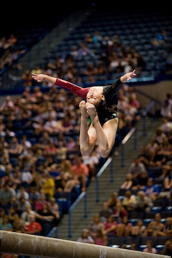

Kyla Ross (USA)
2012 Olympic Team Gold Medalist
2013 World AA Silver Medalist

|
Medal Total
- Olympic Games: 1 Gold
- World Championships: 1
Gold, 3 Silver, 1 Bronze
|
Kyla was born on October 24, 1996 in Honolulu, HI, and trained at Gym Max in Costa Mesa, CA for the majority of her career. A two-time junior US all-around champion, Kyla realized her childhoood dream of making the 2012 US Olympic team and winning a team gold medal. In 2013, she won 3 silver medals (AA, UB, B) at the world championships, and was the 2014 world AA bronze medalist.
Kyla intended to try for the 2016 US Olympic team, but announced her retirement from elite gymnastics that February. She entered UCLA on a full scholarship in fall 2016 and was an integral member of the Lady Bruins' gymnastics team throughout her competitive collegiate career. She was the team's undergraduate assistant coach for the 2021 season while she completed her undergraduate degree in molecular, cell, and developmental biology.
Competition Results
- 2008
- Jr. JO Nationals: 1st AA (Junior A)
- 2009
- Jr. American Classic: 2nd AA
- Jr. US Championships: 1st AA
- Jr. US Classic: 1st AA
- 2010
- Jr. City of Jesolo Trophy: 2nd AA
- Jr. US Championships: 1st AA
- Jr. US Classic: 3rd AA
- 2011
- Jr. City of Jesolo Trophy: 1st AA
- Jr. US Championships: 2nd AA
- Jr. US Classic: 1st AA
- 2012
- City of Jesolo Trophy: 1st AA
- Olympic Games: 1st Team
- Pacific Alliance Championships: 1st Team, 2nd AA, 1st B, 2nd UB, 3rd FX
- US Championships: 4th AA
- US Classic: 2nd AA
- US Olympic Trials: 5th AA
-
- 2013
- City of Jesolo Trophy: 1st Team, 2nd AA, 1st UB, 2nd B
- US Championships: 2nd AA
- US Classic: 1st AA
- World Championships: 2nd AA, 2nd UB, 2nd B, 6th FX
-
- 2014
- City of Jesolo Trophy: 1st Team, 1st AA, 2nd UB, 2nd FX
- US Championships: 2nd AA
- US Classic: 2nd AA
World Championships: 1st Team, 3rd AA, 6th B
-
- 2015
- City of Jesoso Trophy: 1st Team, 10th AA, 1st UB
- US Championships: 10th AA
- US Classic: 14th AA
-
- 2017
- NCAA Championships: 4th Team, 6th AA, 1st UB, 1st B
- 2018
- NCAA Championships: 1st Team, 4th AA, 2nd B, 3rd UB
- 2019
- NCAA Championships: 3rd Team, 2nd AA, 1st V, 1st FX, 6th B
This page was created on July 21, 2021.
© Gymn Forum